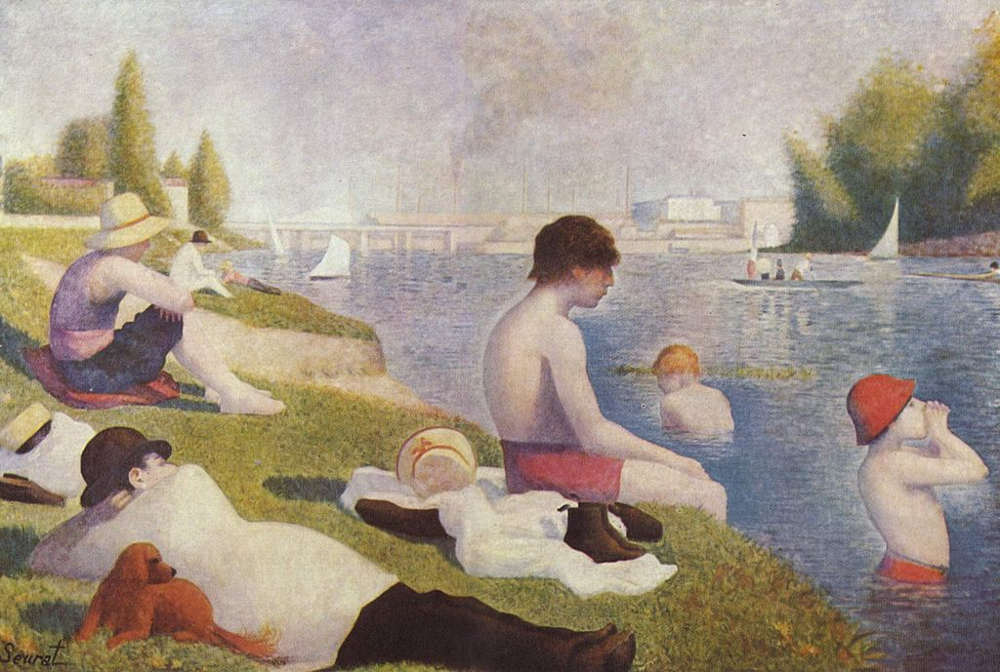

<head>
<meta charset="UTF-8" />
<meta name="keywords" content="drawing, painting" />
<meta name="description" content="drawings by Sunjy" />
<title>Sunjy</title>
<link rel="shortcut icon" type="image/x-icon" href="../../mImages/mCommon/favicon.ico" media="screen" />
<link rel="stylesheet" type="text/css" href="../../mCsses/mCommon/mCssA.css" />
<link rel="stylesheet" type="text/css" href="../../mCsses/mCommon/mCssB.css" />
<link rel="stylesheet" type="text/css" href="../../mCsses/mCommon/mCssC.css" />
<link rel="stylesheet" type="text/css" href="../../mCsses/mCommon/mCssD.css" />
<link rel="stylesheet" type="text/css" href="../../mCsses/mContent/mCssA.css" />
<link rel="stylesheet" type="text/css" href="../../mCsses/mContent/mCssB.css" />
<link rel="stylesheet" type="text/css" href="../../mCsses/mContent/mCssC.css" />
<link rel="stylesheet" type="text/css" href="../../mCsses/mContent/mCssD.css" />
</head>
<script type="text/javascript" src="../../mScripts/mContent/mContentAA.js" /></script>
<script type="text/javascript" src="../../mScripts/mContent/mContentAB.js" /></script>
<script type="text/javascript" src="../../mScripts/mContent/mContentAC.js" /></script>
<script type="text/javascript" src="../../mScripts/mContent/mContentAD.js" /></script>
<script type="text/javascript"></script> 
<script type="text/javascript">
document.write('<div class="mImgAbsolute"></div>');
/*
document.write('<p class="mFontSizeBColor" />From a white paper...</p>');
document.write('<table class="center"><tr><td>');
document.write('');
document.write('</td></tr></table>');
*/
</script>


<script type="text/javascript">
document.write('<p class="mFontSizeBColor" />Bathers at Asnières</p>');
document.write('<p class="mFontSizeSColor" />“Bathers at Asnières” by Georges Seurat depicts a brilliant Seine River scene near a working-class suburb of Paris, over 100 years ago.<br><br>On the right-hand foreground of the canvas are two young bathers in the water and one on the grassy riverbank.<br><br>On the left are four figures and a dog resting on the river bank, enjoying the water views. In the background are trees, buildings, walls, a bridge, and several smoking industrial chimneys.<br><br>Seurat spent most of 1883 working on this large canvas, which was his first major painting. Impressionism influenced him in the use of color and light.<br><br>However, he departed from the Impressionist style. Seurat used a combination of sophisticated brush stroke techniques and meticulous planning for the application of contemporary color theory to bring a unique vibrancy and timelessness to this masterpiece.<br><br>Seurat applied to the French art establishment to have this work exhibited, but it was rejected, and at the time, this artwork puzzled many of Seurat’s contemporaries. <br><br>This painting did not receive acclaim until many years after Seurat’s death, and the appreciation of this painting only grew during the twentieth century.<br></p>');
document.write('<table class="center" /><tr><td>');
document.write('<br>On the right-hand foreground of the canvas are two young bathers in the water and one on the grassy riverbank.<br><br>On the left are four figures and a dog resting on the river bank, enjoying the water views. In the background are trees, buildings, walls, a bridge, and several smoking industrial chimneys.<br><br>Seurat spent most of 1883 working on this large canvas, which was his first major painting. Impressionism influenced him in the use of color and light.<br><br>However, he departed from the Impressionist style. Seurat used a combination of sophisticated brush stroke techniques and meticulous planning for the application of contemporary color theory to bring a unique vibrancy and timelessness to this masterpiece.<br><br>Seurat applied to the French art establishment to have this work exhibited, but it was rejected, and at the time, this artwork puzzled many of Seurat’s contemporaries. <br><br>This painting did not receive acclaim until many years after Seurat’s death, and the appreciation of this painting only grew during the twentieth century.<br>" />');
document.write('</td></tr></table>');
</script>


